BOM：要想在浏览器中使用 JavaScript，必须使用BOM(浏览器对象模型)。BOM提供了很多对象，通过修改这些对象的属性，调用他们的方法，用于控制浏览器的各种行为。
JavaScript需要包括在<script>标签中，这个标签可以出现在页面的任何位置。
<script type="text/javascript">
alert("如果还能重来？");
</script>
方式二：写在外部的.js文件中。然后通过script标签的src属性引入。
<script type="text/javascript" src="script.js"></script>
src属性：使用该属性指向文件的地址，可以是相对路径，也可以是绝对路径。
特别注意：方式一和方式二不要同时使用。一旦同时使用，会默认执行方式二中js文件中的js代码。
数字不可以开头。
不可以使用关键字和保留字，但能包含关键字和保留字。
JavaScript中严格区分大小写。
标识符不能包含空格。
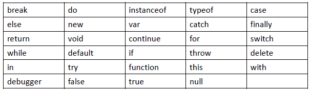
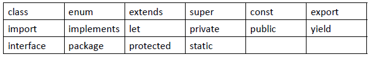
数值类型：number
字符串类型：string
布尔类型：boolean
null型：null
undefined型（Undefined）
对象类型：
函数对象：Function
数组对象：Array
使用typeof 判断，结果是Object
一般对象：Object
typeof(undefined)结果是undefined。
null：表示空值，Null类型只有一个值，即为null。
从语义上看 null表示的是一个空对象。所以使用 typeof检查 null会返回一个Object。
undefined是由null值衍生出来的，所以undefined和null是否相等，会返回true。
NaN：not a number(非数值)，在数学运算中对数值进行计算时，没有结果返回，则返回NaN
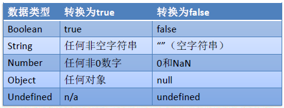
变量声明时不需要指定类型，可以接受所有的数据类型。
没有赋值的变量，默认为undefined
使用typeof(变量名)，判断变量的类型
JS中每一条语句以分号(;)结尾。如果不写分号，浏览器会自动添加，但是会消耗一些系统资源。
/* */表示多行注释
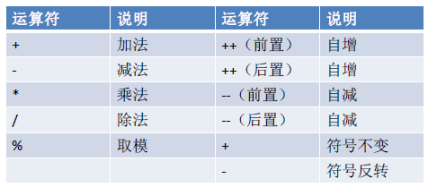
符号：=
<, >, <=, >=, !=, ==, ===（全等）, !==（不全等）
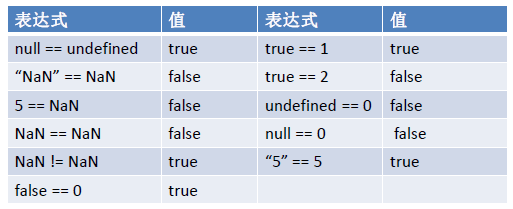
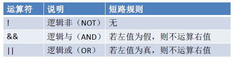
如果进行逻辑运算时，操作数不是布尔类型，则会将其转换为布尔类型再进行计算。
&& ：与运算
情况一：当表达式全为真的时候，返回最后一个表达式的值
情况二：当表达式中有一个为假的时候，返回第一个为假的表达式的值
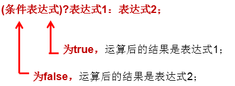
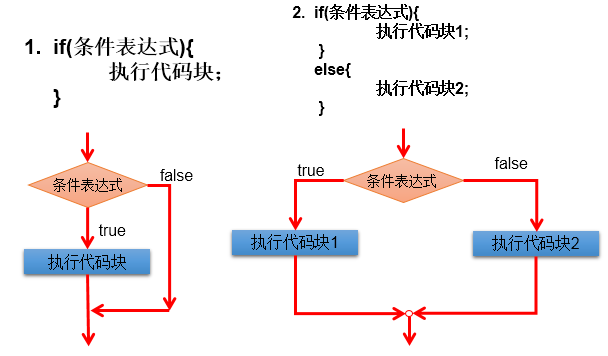
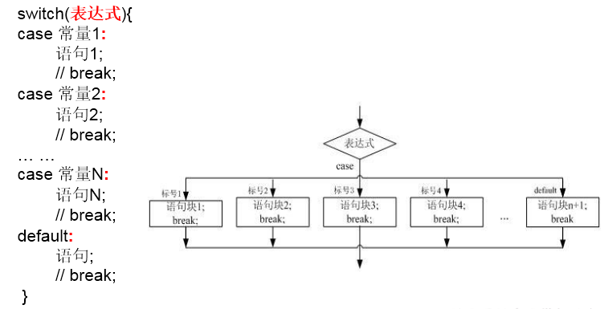
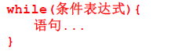
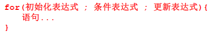
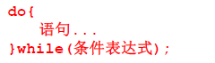
continue 只能用于循环语句中。
二者功能类似，但continue是终止本次循环，break是终止本层循环。
break、continue之后不能有其他的语句，因为程序永远不会执行其后的语句
定义一个非空数组：var arr1 = ["Tom","atguigu.com",true];
在JavaScript的数组中，只要我们通过元素的下标给数组赋值，js就可以根据赋值的最大下标自动给数组扩容
不需要指定返回值。如果函数有返回值，只需要在函数体内直接使用return语句返回需要的值即可。
不需要指定形参类型（因为js所有类型都使用var来声明）
函数在js中也是一种对象，可以将函数的引用赋值给变量
方式一：
function 函数名(形参列表){
函数体
}
方式二：匿名函数
var 变量名 = function(形参列表){
函数体;
}
注意2：一旦定义了同名不同参数个数的函数以后，后定义的函数会覆盖先前定义的同名的所有函数
操作arguments和操作数组一致，也是用来接收传递的参数值。
可以通过角标获取指定的参数。遍历arguments.
可以通过arguments的length属性获取调用函数时传入的实参的个数。
var 变量名 = new Object();//创建一个空的对象实例
变量名.属性名 = 值;//给创建的对象添加一个属性
变量名.函数名 = function(){}; //给创建的对象添加一个函数var 变量名 = { //定义一个空对象
属性名1：值1， //声明属性1
属性名2：值2， //声明属性2
函数名:function(){} //声明函数
};访问方式形同
变量名.属性;
变量名.函数名();
在JavaScript函数中，this关键字指向的是调用当前函数的对象。
Array 、Date、Math、……
浏览器对象
window、location location.href="路径"
dom对象
document、body、button……
用户事件：用户操作，例如单击、鼠标移入、鼠标移出等。
| 函数名 | 说明 |
|---|---|
| onload | 加载完成事件，常用于页面加载完成之后做的一些功能 |
| onclick | 单击事件，常用于用户点击视图的时候触发功能 |
| onblur | 失去焦点事件，常用于失去焦点的时候触发功能 |
| onchange | 内容发生改变事件，常用于下拉列表和文本输入框内容发生改变时 |
| onsubmit |
window.onload = function(){ //页面加载完成之后
//1、查找标签对象
var btn= document.getElementById("btn");
//2、通过标签对象.事件名 = function(){}
btn.onclick = function(){}
}事件触发后我们要执行的函数称为响应函数。如何将响应函数与事件关联起来？我们常使用为事件赋值函数的方式。
步骤一：
步骤二：声明一个事件响应函数
步骤三：将事件响应函数的引用赋值给控件对象的事件属性
超链接点击后会自动跳转
表单提交点击后会发送请求
取消默认行为的方式：return false; 即在事件响应函数内return false;
浏览器加载顺序
按从上到下的顺序加载
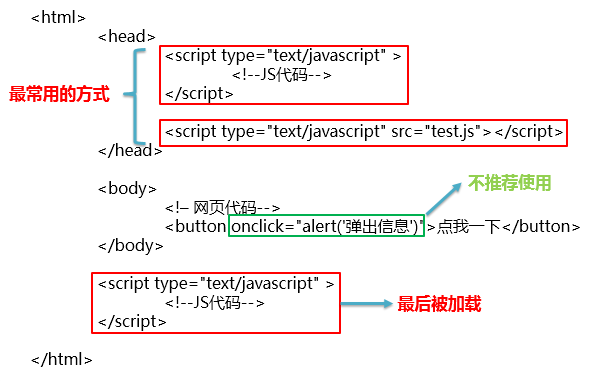
window对象：代表当前浏览器窗口
onload事件：当整个文档加载完成后触发
即在script内先声明此函数，等页面文档全部加载完毕之后在触发此函数内的响应事件
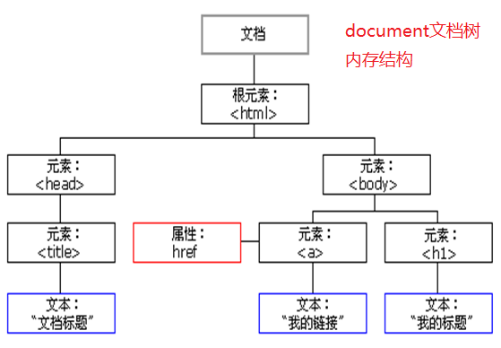
DOM可以做什么
找对象（元素节点）
设置元素的属性值
设置元素的样式
动态创建和删除元素
事件的触发响应：事件源、事件、事件的驱动程序
document对象是window对象的一个属性，代表当前HTML文档，将这个文档抽象成了document对象。
document对象管理了所有的HTML文档内容。
它是包含了整个文档的树形结构，有层级关系。
它让我们把所有的标签都对象化。
我们可以通过document访问所有的标签对象。
获取document对象的本质方法是：window.document，而“window.”可以省略。
在HTML当中，一切都是节点，所有的节点都是Object。
元素节点(Element)：DOM标准将HTML标签的相关信息封装后得到的对象。
属性节点(Attribute)：DOM标准将HTML标签属性的相关信息封装后得到的对象。
文本节点(Text)：DOM标准将HTML文本的相关信息封装后得到的对象。
nodeType：返回一个整数, 这个数值代表着给定节点的类型，只读属性。 1 -- 元素节点 2 -- 属性节点 3 -- 文本节点
nodeValue：返回给定节点的当前值(字符串)，可读写的属性。
元素节点：返回值是 null
属性节点： 返回值是这个属性的值
文本节点： 返回值是这个文本节点的内容
节点之间的关系指元素节点、和文本节点再加换行节点之间的父子或兄弟关系（标签内的属性可通过元素节点操作）
标签内的属性直接通过元素节点对象来get、set方法获取、设置值就可以了，其标签内的文本值可通过再次获取其元素节点对象的子节点对象来取值或赋值=
文本节点的父节点是包含它的标签就是他的父节点
当然W3C考虑换行也是一个节点，多个换行为一个节点
| API | 返回值 | |
|---|---|---|
| 根据id值 | document.getElementById(“id值”) | 一个具体的元素节点 |
| 根据标签名 | document.getElementsByTagName(“标签名”) | 元素节点数组 |
| 根据name属性值 | document.getElementsByName(“name值”) | 元素节点数组 |
| 根据class属性值 | document.getElementsByClassName("class值") | 元素节点数组 |
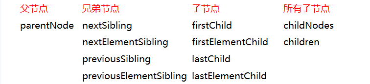
| API | 返回值 | |
|---|---|---|
| 查找指定元素节点的父节点 | element.parentNode | 节点对象 |
| API | 返回值 | |
|---|---|---|
| 查找前一个兄弟节点 | node.previousSibling【W3C考虑换行，IE≤8不考虑】 | 节点对象 |
| 查找后一个兄弟节点 | node.nextSibling【W3C考虑换行，IE≤8不考虑】 | 节点对象 |
| API | 返回值 | |
|---|---|---|
| 查找全部子节点 | element.childNodes【W3C考虑换行，IE≤8不考虑】 | 节点数组 |
| 查找第一个子节点 | element.firstChild【W3C考虑换行，IE≤8不考虑】 | 节点对象 |
| 查找最后一个子节点 | element.lastChild【W3C考虑换行，IE≤8不考虑】 | 节点对象 |
| 查找指定标签名的子节点 | element.getElementsByTagName(“标签名”) | 元素节点数组 |
children：非标准属性。返回的是指定元素的子元素节点的集合。（用的最多）
虽然不是标准的DOM属性，但它和innerHTML方法一样，得到了几乎所有浏览器的支持。
子节点数组 = 父节点.children; //获取所有节点。用的最多。上一段的内容：节点的访问关系都是属性。
节点的操作都是函数（方法）
读取属性值：元素对象.属性名
修改属性值：元素对象.属性名=新的属性值
元素节点.getAttribute("属性名称");
元素节点.setAttribute(属性名, 新的属性值);
元素节点.removeAttribute(属性名);【删除节点】获取文本值三步曲：
获取文本节点的父节点
获取父节点的第一个子节点： parentEle.firstChild
获取文本节点的节点值：parentEle.firstChild.nodeValue
常见操作：
读取文本值：element.firstChild.nodeValue
修改文本值：element.firstChild.nodeValue
| 功能 | |
|---|---|
| document.createElement(“标签名”) | 创建元素节点并返回，但不会自动添加到文档中 |
| document.createTextNode(“文本值”) | 创建文本节点并返回，但不会自动添加到文档中 |
| element.appendChild(ele) | 将ele添加到element所有子节点后面 |
| parentEle.insertBefore(newEle,targetEle) | 将newEle插入到targetEle前面 |
| parentEle.replaceChild(newEle, oldEle) | 用新节点替换原有的旧子节点 |
| parentEle.removeChild(childNode) | 删除指定的子节点 |
| element.innerHTML | 读写起始标签和结束标签中的内容 |
| element.innerText | 读写起始标签和结束标签中的文本 |
读取元素内部HTML代码
元素对象.innerHTML
修改元素内部HTML代码
元素对象.innerHTML=HTML代码